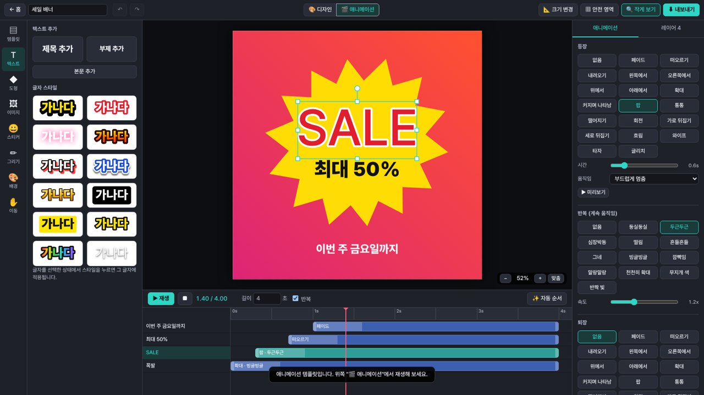

타임라인 컷 편집
V1~V3, A1~A3 트랙에서 자르기(E), 잔물결 삭제, 영상·소리 분리, 키프레임, 10가지 화면 전환을 씁니다.
컷룸은 브라우저와 Windows에서 쓰는 무료 영상 편집기입니다. 타임라인 컷 편집, 노래방·쇼츠 자막 템플릿, 색 보정과 울림 효과, 그리고 친구와 실시간 공동 작업까지 할 수 있습니다.
프리미어 프로처럼 익숙한 화면 구성에, 쇼츠 시대에 맞는 자막 기능을 더했습니다.
V1~V3, A1~A3 트랙에서 자르기(E), 잔물결 삭제, 영상·소리 분리, 키프레임, 10가지 화면 전환을 씁니다.

글자가 차오르는 노래방 자막, 굵은 쇼츠 자막, 자막바 템플릿을 미리 보고 넣습니다. 글자 일부만 색을 바꿀 수도 있습니다.

컷룸 스튜디오에서 템플릿으로 썸네일을 만들고, 사진 배경을 지우고, 글자에 움직임을 넣어 GIF·영상으로 저장하거나 타임라인에 바로 넣습니다.

컷룸 아이디로 친구를 초대하면 같은 타임라인을 함께 고칩니다. 서로의 마우스가 보이고, 영상 파일은 컴퓨터끼리 바로 전송됩니다.
Windows 10/11에 기본으로 들어 있는 Edge WebView2로 돌아가서 파일이 1.5MB밖에 되지 않습니다.
받은 CutRoom-Windows.zip의 압축을 원하는 폴더에 풉니다.
"Windows의 PC 보호" 창이 뜨면 "추가 정보" → "실행"을 누르세요. 서명되지 않은 개인 제작 앱이라 나오는 경고입니다.
첫 화면에서 회원가입하면 웹과 앱 어디서든 같은 작품을 열 수 있습니다. 로그인 없이도 쓸 수 있습니다.